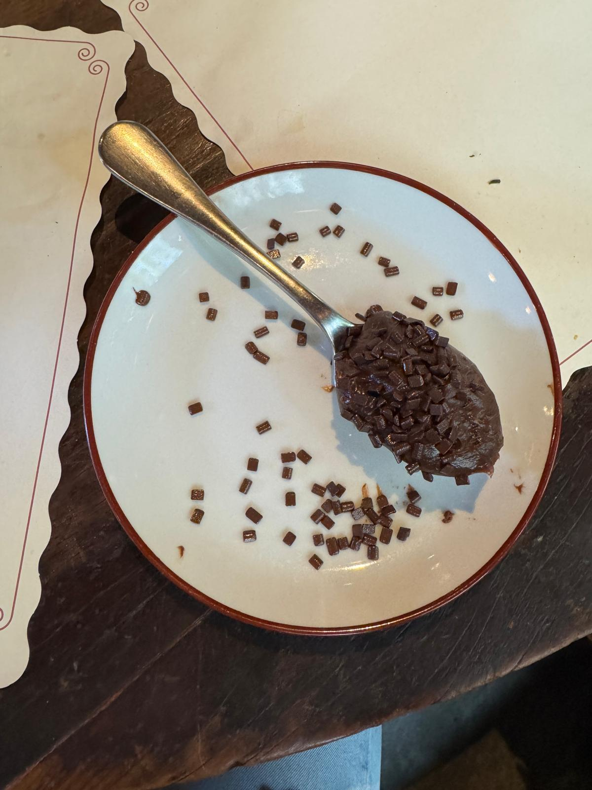

Brigadeiro de colher

Description:
Brigadeiro de colher, typical brazilian dessert.
- Condensed milk
- Cocoa powder
- Chocolate sprinkles
- Unsalted butter
- A pinch of salt
How To Cook It
- Mix the condensed milk, the butter, and the cocoa powder in a medium non-stick pan.
- The mixture thickens after about 10-12 minutes, and once you can run your silicone spatula through the middle of it without it running back together for 2-3 seconds, it is done.
- Pour the mixture onto the lightly greased plate and let it chill in the fridge for an hour.
- Once chilled, make a 'croqueta' form in a spoon, put some choc sprinkle on top and enjoy!